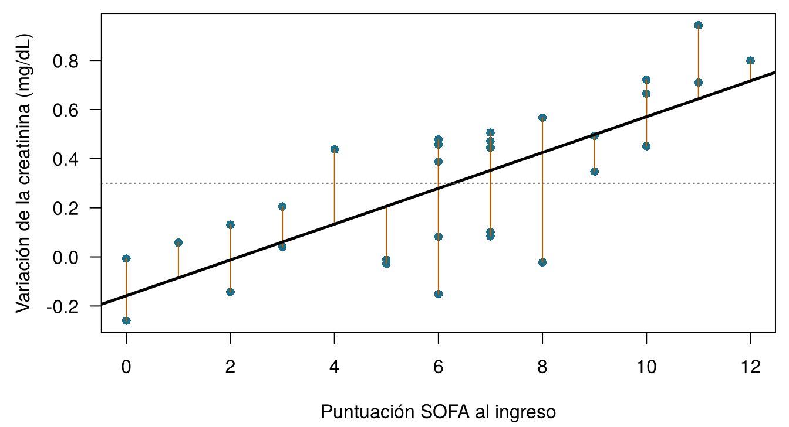
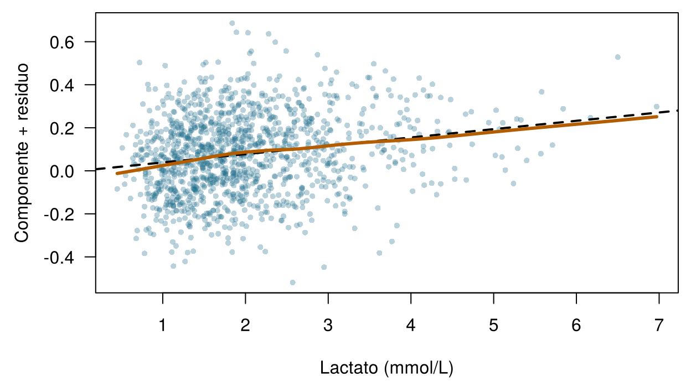
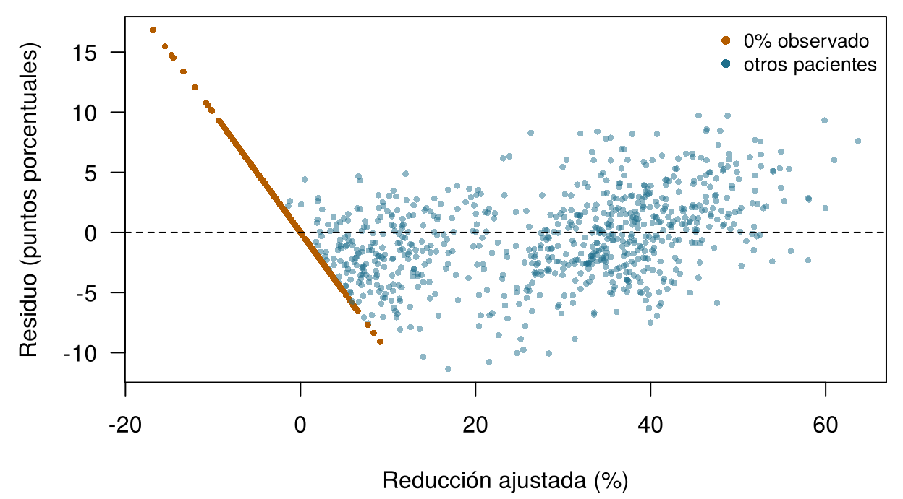

4 Modelos lineales y regularización
Cuatro preguntas para calentar. Arriesga tu mejor respuesta; el capítulo explica cada una.
| Pregunta | Tu respuesta |
|---|---|
| La recta de Emma es variación predicha = −0,06 + 0,06 × SOFA. ¿Qué predice, en mg/dL, para un paciente con SOFA 10? | |
| La creatinina de un paciente aumentó en realidad 0,50 mg/dL; la recta predecía 0,30. ¿Cuál es la diferencia observado − predicho? | |
| Si añades predictores a un modelo ajustado por mínimos cuadrados, el error en los datos de entrenamiento… | |
| Penalizar los coeficientes grandes para que un modelo con miles de genes no sufra sobreajuste se llama… |
Cómo usar este capítulo
¿Empiezas aquí?
Este capítulo toma prestadas algunas ideas de capítulos anteriores. En una línea cada una:
- Modelo y error. Un modelo estadístico escribe un desenlace como \(y = f(\mathbf{x}) + \varepsilon\): una parte sistemática \(f\) de las características más un error \(\varepsilon\); un modelo ajustado es \(\hat f\) y su predicción es \(\hat y\) (Sección 1.4). Cada fila es una instancia, cada columna una característica; hay \(n\) instancias y \(p\) predictores (Definición 1.7).
- Evaluación honesta. Los modelos se ajustan en un conjunto de entrenamiento y se juzgan en un conjunto de prueba que nunca han visto; un modelo demasiado flexible sufre sobreajuste (Sección 1.8, Definición 1.8).
- Del Capítulo 3. Las métricas de regresión MAE y RMSE (error medio en las unidades del desenlace; la RMSE castiga más los errores grandes) y el \(R^2\) (la parte de la varianza del desenlace que explica el modelo); la validación cruzada con \(V\) particiones (folds); un hiperparámetro es un ajuste elegido por validación cruzada, no ajustado directamente; la fuga de información (leakage) es información sobre el desenlace que se cuela en los predictores. En el ONCO-1, los genes 08, 14 y 19 son copias del desenlace con fuga y quedan fuera de todos los modelos de este capítulo.
- Del Capítulo 2. La distribución normal y la idea de verosimilitud.
| Ejemplo | Quién o qué | Desenlace | Caras que vas a conocer |
|---|---|---|---|
| 1 UCI Sala 7 | 1250 pacientes de UCI en 4 hospitales | variación de la creatinina en 48 h (lesión renal aguda si ≥ 0,3 mg/dL) | Aoife (71 años, sepsis, riesgo limítrofe), Tomás (54 años, riesgo bajo), Priya (38 años, riesgo alto); la Dra. Emma Walsh; Seán, el farmacéutico |
| 2 Ensayo ONCO-1 | 1000 pacientes aleatorizados a quimioterapia o no | reducción del tumor (%) | pacientes #0042 y #0917 |
| 3 HomeBeat | 500 personas que llevan un reloj inteligente en casa | puntuación de estrés, evento de deterioro | Lena |
| 4 CellWorks | 420 lotes de producción de una terapia celular | puntuación de potencia | lote CW-118 |
Los cuatro conjuntos de datos son simulados y pueden descargarse en el apéndice de datos. La presentación completa está en la Sección 1.1.
Este capítulo construye el modelo lineal desde cero y después le enseña a contenerse. Tiene diez secciones y un Laboratorio, siete comprobaciones rápidas, dos widgets “Pruébalo”, un desafío de emparejamiento y tres misiones de programación en R y Python. Calcula unos 100 minutos. La matemática se presenta línea a línea; si una fórmula te parece densa, lee la frase siguiente, que siempre dice lo mismo con palabras.
La notación de un vistazo (solo para consulta)
| Símbolo | Significado | Sección |
|---|---|---|
| \(\beta_0\), \(\beta_j\) | ordenada en el origen y coeficiente del predictor \(j\) | Sección 4.1 |
| \(\hat\beta_j\) | coeficiente estimado (“sombrero” = estimado a partir de los datos) | Sección 4.1 |
| \(e_i = y_i - \hat y_i\) | residuo de la instancia \(i\) | Sección 4.1 |
| RSS | suma de los cuadrados de los residuos, \(\sum_i e_i^2\) | Sección 4.1 |
| \(\mathbf{X}\), \(\mathbf{\beta}\) | matriz de diseño (\(n\) filas, una columna por coeficiente) y vector de coeficientes | Sección 4.2 |
| \(h_{ii}\) | apalancamiento de la instancia \(i\) | Sección 4.5 |
| \(D_i\) | distancia de Cook de la instancia \(i\) | Sección 4.5 |
| \(\lambda\) | intensidad de la penalización (un hiperparámetro) | Sección 4.7 |
| \(\alpha\) | parámetro de mezcla de la elastic net, de 0 (ridge) a 1 (lasso) | Sección 4.7 |
La lista completa está en la página de notación.
4.1 De una recta a los mínimos cuadrados
En el Capítulo 1 moviste dos controles deslizantes hasta que tu recta a través de los datos de la UCI Sala 7 tuvo un error pequeño. Un programa hace lo mismo, pero necesita una regla precisa para “pequeño”. La regla que usa el modelo lineal tiene dos siglos (Stigler 1981) y sigue siendo la opción por defecto en todos los paquetes estadísticos.
Para un predictor \(x\) (por ejemplo, el SOFA) y un desenlace \(y\) (la variación de la creatinina), el modelo de regresión lineal simple es
\[ y_i = \beta_0 + \beta_1 x_i + \varepsilon_i , \qquad i = 1, \dots, n , \qquad(4.1)\]
donde \(\beta_0\) (beta cero) es la ordenada en el origen, el desenlace predicho cuando \(x = 0\), y \(\beta_1\) es la pendiente, la variación del desenlace predicho por cada aumento de una unidad en \(x\). Una vez que los coeficientes se estiman a partir de los datos, llevan sombrero, y la predicción para el paciente \(i\) es \(\hat y_i = \hat\beta_0 + \hat\beta_1 x_i\).
Definición 4.1 (Regresión lineal) Un modelo de regresión lineal escribe el desenlace como una ordenada en el origen más una suma ponderada de predictores más un error: \(y = \beta_0 + \beta_1 x_1 + \dots + \beta_p x_p + \varepsilon\). Los pesos \(\beta_j\) son los coeficientes. “Lineal” se refiere a los coeficientes, no a los predictores: un modelo que contiene \(x^2\) o \(\log x\) sigue siendo lineal, porque cada coeficiente multiplica algo conocido y los términos se suman.
¿Cómo debe elegir el programa \(\beta_0\) y \(\beta_1\)? Para cualquier recta candidata, cada paciente tiene un residuo, la distancia vertical entre lo que ocurrió y lo que predice la recta (Figura 4.1). Los mínimos cuadrados eligen la recta cuyos residuos son, en un sentido preciso, lo más pequeños posible.
Definición 4.2 (Residuo y mínimos cuadrados) El residuo de la instancia \(i\) es \(e_i = y_i - \hat y_i\), observado menos predicho. La suma de los cuadrados de los residuos es \(\text{RSS} = \sum_{i=1}^n e_i^2\). Los mínimos cuadrados ordinarios (OLS, del inglés ordinary least squares) estiman los coeficientes como los valores que hacen que la RSS sea lo más pequeña posible.
¿Por qué cuadrados, y no las distancias absolutas que minimizaste en el Capítulo 1? Por tres razones. Los cuadrados dan un criterio suave, con un único mínimo que se puede encontrar exactamente, con una fórmula, en lugar de por ensayo y error. Castigan más los errores grandes que los pequeños, que a menudo es lo que queremos cuando un fallo grande es clínicamente peor. Y si los errores siguen una distribución normal, la recta de mínimos cuadrados es también la recta de máxima verosimilitud (Capítulo 2). Para un único predictor, la fórmula es corta:
\[ \hat\beta_1 = \frac{\sum_{i}(x_i - \bar x)(y_i - \bar y)}{\sum_{i}(x_i - \bar x)^2}, \qquad \hat\beta_0 = \bar y - \hat\beta_1 \bar x , \qquad(4.2)\]
donde \(\bar x\) e \(\bar y\) son las medias. Dicho con palabras: la pendiente mide cómo varían juntas \(x\) e \(y\), en relación con cuánto varía \(x\) por sí sola, y la recta siempre pasa por el punto de las medias \((\bar x, \bar y)\) (James et al. 2021, cap. 3).
Con los 1250 pacientes de la UCI Sala 7, los mínimos cuadrados dan \(\hat y = -0,056 + 0,060 \times \text{SOFA}\): cada punto de SOFA adicional se asocia con un aumento de la creatinina unos 0,06 mg/dL mayor. Estos son los números, redondeados, que aparecen en las preguntas de calentamiento. Todos los métodos de este libro siguen el ciclo de aprendizaje del Capítulo 1 (suponer, corregir, ajustar, repetir); en los mínimos cuadrados el ciclo tiene un atajo, porque la Ecuación 4.2 salta directamente a la mejor recta.
Dos analistas ajustan una recta a los mismos datos de la UCI Sala 7. La analista A minimiza la suma de los residuos absolutos; la analista B minimiza la suma de los cuadrados de los residuos. ¿Qué afirmación es verdadera?
4.2 Muchos predictores: regresión lineal múltiple
La pregunta de Seán necesita algo más que el SOFA. La regresión lineal múltiple usa a la vez todas las mediciones del ingreso. Para la UCI Sala 7, escribiendo cada variable con su nombre en el conjunto de datos,
\[ \begin{aligned} &\mathtt{delta\_creatinine\_48h} \\ &\quad = \beta_0 + \beta_1\,\mathtt{ICU\_B} + \beta_2\,\mathtt{ICU\_C} + \beta_3\,\mathtt{ICU\_D} \\ &\quad + \beta_4\,\mathtt{age} + \beta_5\,\mathtt{sofa} + \beta_6\,\mathtt{lactate} \\ &\quad + \beta_7\,\mathtt{map\_min} + \beta_8\,\mathtt{baseline\_creat} \\ &\quad + \beta_9\,\mathtt{protocol\_adherence} + \beta_{10}\,\mathtt{bun} \\ &\quad + \beta_{11}\,\mathtt{crp} + \beta_{12}\,\mathtt{albumin} + \varepsilon . \end{aligned} \qquad(4.3)\]
patient_id queda fuera (identifica una fila y no aporta ninguna información sobre el paciente), igual que el propio desenlace.
4.2.1 Las categorías se convierten en columnas: codificación con variables indicadoras
site es categórica: ICU_A, ICU_B, ICU_C o ICU_D. Un coeficiente multiplica un número, así que las cuatro unidades se transforman en tres columnas 0/1 llamadas variables indicadoras (o dummy): ICU_B vale 1 para los pacientes tratados en la ICU_B y 0 en caso contrario, y lo mismo para ICU_C e ICU_D. La ICU_A, que no tiene columna, es el nivel de referencia: sus pacientes tienen 0 en las tres columnas. El coeficiente de ICU_C es entonces la diferencia entre la ICU_C y la ICU_A para pacientes iguales en todo lo demás. Hace falta una columna menos que el número de categorías, porque una cuarta columna se podría predecir a partir de las otras tres (valdría 1 exactamente cuando todas valen 0).
Definición 4.3 (Matriz de diseño y variables indicadoras) La matriz de diseño \(\mathbf{X}\) tiene una fila por instancia y una columna por coeficiente: una columna de unos para la ordenada en el origen, una columna para cada predictor numérico y \(k-1\) columnas indicadoras (0/1) para un predictor categórico con \(k\) niveles, uno de los cuales sirve de referencia. El modelo pasa a ser \(\mathbf{y} = \mathbf{X}\mathbf{\beta} + \mathbf{\varepsilon}\).
En forma matricial, la estimación por mínimos cuadrados tiene una famosa forma cerrada, la solución de las llamadas ecuaciones normales (James et al. 2021, cap. 3; Hastie, Tibshirani, y Friedman 2009, cap. 3):
\[ \hat{\mathbf{\beta}} = (\mathbf{X}^\top\mathbf{X})^{-1}\mathbf{X}^\top\mathbf{y} . \qquad(4.4)\]
No tendrás que calcularla a mano. Conviene saber dos cosas sobre ella. Primera: solo existe si ninguna columna de \(\mathbf{X}\) es una combinación exacta de las demás y hay más filas que columnas; volveremos a ello cuando las columnas sean 2000 genes. Segunda: hay que usar el mismo diseño para los datos de entrenamiento y de prueba: las mismas columnas indicadoras, en el mismo orden, con el mismo nivel de referencia. En R, model.matrix() construida a partir de la fórmula de los datos de entrenamiento lo garantiza; en Python, fija las categorías antes de llamar a pd.get_dummies() (McKinney 2010). Un paciente de prueba de una unidad sin pacientes de entrenamiento no tendría columna en la que entrar.
4.2.2 Leer los coeficientes
La Tabla 4.1 muestra el modelo ajustado. Como la UCI Sala 7 es simulada, podemos hacer algo imposible con datos reales: poner cada estimación junto al valor verdadero que se usó para generar los datos.
| Término | Unidad | Estimación | IC del 95% | Valor en la simulación |
|---|---|---|---|---|
| (Intercept) | n/d | 0.38 | 0.252 a 0.507 | n/d |
| siteICU_B | frente a ICU_A | 0.00681 | -0.0219 a 0.0355 | 0.03 |
| siteICU_C | frente a ICU_A | 0.0741 | 0.0454 a 0.103 | 0.09 |
| siteICU_D | frente a ICU_A | 0.134 | 0.105 a 0.163 | 0.13 |
| age | por año | -0.0000761 | -0.000802 a 0.00065 | 0 |
| sofa | por punto | 0.0415 | 0.0372 a 0.0458 | 0.04 |
| lactate | por mmol/L | 0.0387 | 0.0279 a 0.0495 | 0.10 × log(lactate + 0.1) |
| map_min | por mmHg | -0.00631 | -0.00731 a -0.0053 | -0.006 |
| baseline_creat | por mg/dL | 0.231 | 0.201 a 0.261 | 0.22 |
| protocol_adherence | por 1,0 (0 → 100%) | -0.292 | -0.351 a -0.234 | -0.28 |
| bun | por mg/dL | 0.0025 | 0.00122 a 0.00378 | 0.0035 |
| crp | por mg/L | 0.00127 | 0.000986 a 0.00155 | 0.0012 |
| albumin | por g/dL | -0.075 | -0.0965 a -0.0534 | -0.08 |
Cada coeficiente responde a la pregunta “¿en cuánto difiere la variación predicha de la creatinina entre dos pacientes que difieren en una unidad en este predictor y son iguales en todos los demás?”
Definición 4.4 (Interpretar un coeficiente) En una regresión lineal múltiple, \(\beta_j\) es la diferencia esperada en el desenlace entre dos instancias que difieren en una unidad en \(x_j\) y tienen los mismos valores en todos los demás predictores del modelo. Su tamaño depende de las unidades de \(x_j\); su significado depende de qué otros predictores hay en el modelo. Describe una asociación: solo es un efecto causal bajo supuestos adicionales.
Lee tres filas con esa frase en mente.
- Creatinina basal. Para dos pacientes con el mismo SOFA, lactato, presión arterial, etcétera, pero con una creatinina basal que difiere en 1 mg/dL, se predice una diferencia de 0,23 mg/dL en su aumento a las 48 horas (intervalo de confianza del 95%, 0,20 a 0,26). La simulación usó 0,22.
- Edad. La estimación es -0,00008 por año, prácticamente cero, como en la simulación. En la vida real la edad importa para los riñones, pero aquí su influencia pasa por la creatinina basal, que ya está en el modelo.
- Albúmina, la pregunta de Seán. Cada g/dL adicional de albúmina se asocia con un aumento 0,075 mg/dL menor. ¿Significa eso que una infusión de albúmina protegería los riñones de Aoife? No a partir de este modelo. En el Capítulo 1 viste que la gravedad confunde la adherencia al protocolo; la albúmina baja también es un marcador de gravedad e inflamación (Soeters, Wolfe, y Shenkin 2019). Un coeficiente te dice en qué difieren en el desenlace los pacientes que resultan diferir en albúmina, no qué ocurriría si cambiaras la albúmina (Hernán y Robins 2020). El Capítulo 13 está dedicado a esa segunda pregunta.
Los coeficientes en unidades distintas no se pueden comparar directamente: 0,04 por punto de SOFA y 0,0013 por mg/L de PCR no dicen nada sobre qué variable importa más, porque la PCR de un paciente típico varía en decenas de mg/L. Si quieres compararlos, estandariza antes los predictores (resta la media y divide por la desviación típica), de modo que cada coeficiente sea “por desviación típica”. Estandarizaremos todos los predictores antes de regularizarlos en la Sección 4.7.
4.2.3 Los pacientes de esta noche
El modelo ajustado da una predicción para cada uno de los pacientes de esta noche, con un intervalo de predicción del 95%: un rango que debería contener el desenlace de un paciente nuevo como este 95 veces de cada 100, si se cumplen los supuestos del modelo. Para compararlo con otros modelos, un modelo debe ajustarse solo con los pacientes de entrenamiento, así que la Tabla 4.2 usa la misma fórmula reajustada en los 1000 pacientes de entrenamiento de la división común; los coeficientes apenas se mueven.
| Paciente | Predicho | Intervalo de predicción del 95% |
|---|---|---|
| Aoife Byrne | 0.30 | -0.06 a 0.66 |
| Tomás Ruiz | -0.15 | -0.51 a 0.21 |
| Priya Nair | 1.19 | 0.83 a 1.56 |
La predicción para Aoife, 0,30 mg/dL, sigue cerca del umbral de LRA de 0,3, y su intervalo se extiende a ambos lados de él. El modelo es más útil para Tomás (Tomás Ruiz, 54 años, el paciente de riesgo bajo) y para Priya (Priya Nair, 38 años, muy grave), cuyos intervalos quedan por completo a un solo lado. Un único número oculta esa diferencia; el Capítulo 5 convierte las predicciones en probabilidades de LRA, y el Capítulo 8 hace explícita la incertidumbre.
En la Tabla 4.1, el coeficiente de siteICU_D es de aproximadamente 0,13. ¿Qué significa?
Ajusta tu primera regresión múltiple. Los datos de la UCI Sala 7 están cargados como icu. En R, el código ajusta con lm() un modelo lineal de delta_creatinine_48h en función de sofa, map_min y baseline_creat; rellena el hueco para extraer el coeficiente de baseline_creat. En Python, rellena el hueco con el resolvedor de mínimos cuadrados de numpy (Harris et al. 2020). ¿Cómo se compara el coeficiente con el valor de la Tabla 4.1, que procedía de un modelo con más predictores?
lm() (abreviatura de linear model, modelo lineal) ajustó el modelo; coef() devuelve sus coeficientes, con el nombre de los predictores. Elige uno escribiendo su nombre entre las comillas.
coef(fit)["baseline_creat"]El resolvedor de mínimos cuadrados de numpy es np.linalg.lstsq.
beta, *_ = np.linalg.lstsq(X, y, rcond=None)4.3 Leer la salida: incertidumbre, valores p y ANOVA
En R, summary() imprime el informe clásico de una regresión (aquí abreviado a las primeras filas de la tabla de coeficientes).
summary(fit_w7) Estimate Std. Error t value Pr(>|t|)
(Intercept) 0.3796 0.0651 5.8285 0.0000
siteICU_B 0.0068 0.0146 0.4652 0.6419
age -0.0001 0.0004 -0.2057 0.8371
sofa 0.0415 0.0022 18.7489 0.0000
albumin -0.0750 0.0110 -6.8279 0.0000
Residual standard error: 0.181 on 1237 degrees of freedom
Multiple R-squared: 0.641, Adjusted R-squared: 0.638
F-statistic: 184.4 on 12 and 1237 DF, p-value < 2.2e-16Cada fila da la estimación, su error estándar (cuánto variaría la estimación de una muestra a otra), el valor t (la estimación dividida por el error estándar) y un valor p. Debajo de la tabla: el error estándar residual (residual standard error), de unos 0,18 mg/dL, es el tamaño típico de un residuo; \(R^2 = 0,64\) dice que el modelo explica en torno al 64% de la variación del desenlace (en los datos de entrenamiento, así que es optimista; Capítulo 3); el \(R^2\) ajustado aplica una pequeña penalización por el número de predictores; y la prueba F pregunta si los predictores, tomados en conjunto, explican algo.
Definición 4.5 (Intervalo de confianza y valor p (en breve)) Un intervalo de confianza del 95% para \(\beta_j\) es un rango calculado de modo que, en muchas repeticiones del estudio, el 95% de esos rangos contendría el valor verdadero. El valor p de \(\beta_j\) es la probabilidad de obtener una estimación al menos tan alejada de cero como la observada, si el coeficiente verdadero fuera cero y se cumplieran los supuestos del modelo.
Un valor p es fácil de malinterpretar (Wasserstein y Lazar 2016). No es la probabilidad de que el predictor no tenga efecto, y no mide lo grande o importante que es una asociación. Con 1250 pacientes, una asociación minúscula puede tener un valor p ínfimo; con 30 pacientes, una asociación grande y clínicamente importante puede no tenerlo. El intervalo de confianza suele ser más informativo, porque muestra a la vez el tamaño de la asociación y su incertidumbre, en las propias unidades del desenlace. Cuando un modelo tiene miles de predictores, algunos tendrán valores p pequeños solo por azar; para esa situación existen procedimientos que controlan la tasa de falsos descubrimientos (Benjamini y Hochberg 1995), y la regularización, más adelante en este capítulo, ofrece otra vía.
4.3.1 ANOVA: el orden de las preguntas importa
Una tabla de análisis de la varianza (ANOVA) reparte la variación explicada por el modelo entre las contribuciones de cada predictor, con una prueba F para cada una. La función anova() de R lo hace de forma secuencial: a cada predictor se le atribuye lo que explica después de los predictores que aparecen antes que él y antes de los que aparecen después. Por eso, el orden de la fórmula cambia la respuesta.
En la UCI Sala 7 el efecto es llamativo. Con age en segundo lugar, como en la Ecuación 4.3, la ANOVA secuencial da a la edad un valor p de 0,00014. Si se prueba la edad en último lugar, después de todos los demás predictores, con drop1(fit, test = "F"), da 0,84. Ambas son respuestas correctas a preguntas distintas. La primera pregunta “¿explica algo la edad, ignorando todo lo que viene después de ella en la fórmula?”, y sí lo explica, porque los pacientes mayores tienen una creatinina basal más alta. La segunda pregunta “¿añade algo la edad cuando ya se conocen la creatinina basal y el resto?”, y no añade nada. Cuando no hay un orden natural entre los predictores, usa las pruebas “cada término en último lugar” (drop1() en R base, o Anova() del paquete car (Fox y Weisberg 2019)), que coinciden con las pruebas t de la tabla de resumen para los predictores numéricos.
Para albumin, la tabla de resumen indica \(p < 0.001\). ¿Qué interpretación es correcta?
4.4 Seis supuestos
Los números de la Tabla 4.1 solo son fiables si el modelo es una representación razonable de los datos. La regresión lineal se apoya en seis supuestos; la Figura 4.2 muestra el aspecto de cada uno cuando se cumple y cuando falla.
![Doce paneles pequeños en seis pares. Linealidad: una nube recta frente a una nube curva. Independencia: residuos dispersos al azar a lo largo del tiempo frente a residuos que deambulan en largas rachas. Varianza constante: una banda uniforme frente a un embudo. Normalidad: un gráfico Q-Q sobre la recta frente a uno que se aparta en la cola superior. Colinealidad: dos predictores no relacionados frente a dos casi perfectamente correlacionados. Puntos influyentes: una recta a través de una nube frente a una recta arrastrada hacia abajo por un punto extremo.](ch04.es_files/figure-html/fig-ch04-assumptions-1.png)
- Linealidad. El desenlace medio varía linealmente con cada predictor (en la escala que usa el modelo). Si la relación verdadera es curva, el modelo se equivoca sistemáticamente en algunas zonas. Comprobación: los residuos frente a los valores ajustados, o frente a cada predictor, no deben mostrar ninguna curva. Remedio: transformar un predictor (logaritmo, cuadrado), añadir un spline o usar un modelo más flexible (Capítulos 6 y 7).
- Independencia de los errores. El residuo de un paciente no dice nada sobre el residuo de otro. Este supuesto falla con mediciones repetidas del mismo paciente, con pacientes agrupados en hospitales o con datos recogidos a lo largo del tiempo. Consecuencia: los errores estándar son demasiado pequeños y los valores p, demasiado optimistas. Comprobación: representar los residuos en orden temporal o por grupo. Remedio: modelos para datos agrupados o longitudinales.
- Varianza constante (homocedasticidad). La dispersión de los residuos es la misma en todo el rango de valores ajustados. Una forma de embudo es heterocedasticidad. Comprobación: gráfico de residuos o gráfico de escala-localización; existe una prueba formal (Breusch y Pagan 1979). Remedio: transformar el desenlace, usar mínimos cuadrados ponderados o errores estándar robustos (“sándwich”) (White 1980).
- Normalidad de los errores. Los errores siguen una distribución normal. Esto importa para los valores p y los intervalos exactos en muestras pequeñas, y para los intervalos de predicción; importa poco para las propias estimaciones o, con muestras grandes, para los intervalos de confianza. Comprobación: un gráfico Q-Q, en el que los puntos deben seguir la recta.
- Ausencia de colinealidad (grave). Los predictores no están demasiado relacionados entre sí. Con predictores muy correlacionados, el modelo no puede separar sus contribuciones, de modo que los coeficientes individuales se vuelven inestables y sus errores estándar grandes, aunque las predicciones puedan seguir siendo buenas. Comprobación: las correlaciones y el factor de inflación de la varianza (Sección 4.5). Remedio: eliminar o combinar predictores, o regularizar (Sección 4.7). La colinealidad vuelve en el Capítulo 10.
- Ausencia de puntos excesivamente influyentes. Ningún paciente determina por sí solo el ajuste. Comprobación: el apalancamiento y la distancia de Cook (Sección 4.5). Remedio: comprobar primero si hay errores en el registro; nunca eliminar a un paciente simplemente porque resulte incómodo.
No todos los supuestos importan para todos los fines (Tabla 4.3). Bajo los tres primeros supuestos, más la ausencia de colinealidad exacta, las estimaciones por mínimos cuadrados son insesgadas y tienen la menor varianza entre los estimadores lineales insesgados, un resultado conocido como teorema de Gauss-Markov; la normalidad es el supuesto adicional que hay detrás de los valores p y los intervalos exactos en muestras pequeñas (James et al. 2021, cap. 3; Hastie, Tibshirani, y Friedman 2009, cap. 3).
| Supuesto | Coeficientes y predicciones | Errores estándar, valores p, intervalos de confianza | Intervalos de predicción |
|---|---|---|---|
| Linealidad | esencial | esencial | esencial |
| Independencia | normalmente sin problema | esencial | importante |
| Varianza constante | sin problema | importante | esencial |
| Normalidad | sin problema | solo en muestras pequeñas | importante |
| Ausencia de colinealidad grave | predicciones sin problema; coeficientes individuales inestables | importante | sin problema |
| Ausencia de puntos influyentes | importante | importante | importante |
Un equipo construye un modelo lineal con 1250 pacientes solo para predecir la variación de la creatinina, y lo juzgará por su error en un conjunto de prueba aparte. ¿Qué supuesto debe preocuparle menos?
4.5 Diagnóstico: comprobar el modelo de la UCI Sala 7
En R, plot() aplicado a un modelo lineal ajustado dibuja cuatro gráficos de diagnóstico estándar (Figura 4.3).

Léelos de uno en uno.
- Residuos frente a ajustados. Una banda uniforme alrededor de cero con una línea de tendencia plana: ningún signo de una relación curva en conjunto, y ningún embudo.
- Q-Q normal. Los puntos siguen la diagonal casi a la perfección; el supuesto de normalidad es razonable.
- Escala-localización. La línea de tendencia es casi plana: la dispersión de los residuos es aproximadamente la misma para aumentos predichos pequeños y grandes.
- Residuos frente a apalancamiento. Todos los pacientes tienen un apalancamiento bajo y la mayor distancia de Cook es 0,011, muy por debajo de la curva de 0,5 que R dibuja cuando un paciente se acerca a ella.
Estos gráficos miran el modelo en su conjunto y pueden ocultar un problema con un solo predictor. Un gráfico de componente más residuo muestra, para un predictor, su contribución ajustada más los residuos (Fox y Weisberg 2019). Para el lactato se curva (Figura 4.4): el desenlace sube con fuerza cuando el lactato es bajo y más despacio cuando es alto. Así es exactamente como se generaron los datos, con \(\log(\text{lactato})\). Sustituir lactate por log(lactate) eleva el \(R^2\) ajustado solo de 0,638 a 0,638: una mejora real pero pequeña, lo cual es típico.

4.5.1 Apalancamiento, valores atípicos e influencia
No todos los pacientes poco habituales son un problema, y las tres palabras que se usan para ellos significan cosas distintas.
Definición 4.6 (Apalancamiento, valor atípico y distancia de Cook) Una instancia tiene un apalancamiento \(h_{ii}\) alto cuando sus valores de los predictores están lejos de los de las demás instancias: podría arrastrar la recta con fuerza. Un valor atípico (outlier) es una instancia con un residuo grande: el modelo la ajusta mal. Una instancia es influyente cuando eliminarla cambiaría de forma apreciable los coeficientes ajustados. La distancia de Cook \(D_i\) combina los dos ingredientes, \[ D_i = \frac{e_i^2}{(p+1)\,s^2}\cdot\frac{h_{ii}}{(1-h_{ii})^2}, \] donde \(s^2\) es la varianza residual y \(p+1\) el número de coeficientes (Cook 1977).
Un paciente con apalancamiento alto que está sobre la recta es inofensivo; un valor atípico con valores medios de los predictores mueve la recta solo un poco; es la combinación de ambas cosas lo que hace influyente a un punto (Belsley, Kuh, y Welsch 1980). Las reglas prácticas habituales señalan para una revisión más atenta un apalancamiento superior a \(2(p+1)/n\) y una distancia de Cook superior a \(4/n\), y tratan \(D_i > 1\) como una advertencia seria (Fox y Weisberg 2019). Son señales, no veredictos: lo correcto es revisar el registro (¿un error al teclear un valor de laboratorio?) e informar de si las conclusiones cambian sin el paciente, no eliminarlo discretamente. En la UCI Sala 7, 63 pacientes superan la señal de \(4/n\), como cabría esperar por azar entre 1250, y ninguno se acerca siquiera a 1.
Para la colinealidad, el factor de inflación de la varianza (VIF, del inglés variance inflation factor) del predictor \(j\) es \(\text{VIF}_j = 1/(1-R_j^2)\), donde \(R_j^2\) es el \(R^2\) de una regresión de \(x_j\) sobre todos los demás predictores. Indica cuántas veces mayor es la varianza de \(\hat\beta_j\) de lo que sería si \(x_j\) no estuviera relacionado con los demás predictores; los valores superiores a 5 o 10 suelen considerarse una señal de problemas (James et al. 2021, cap. 3). En la UCI Sala 7, el mayor VIF es 1,71, el de sofa: nada preocupante.
Arrastra un paciente. Los puntos son 30 pacientes de la UCI Sala 7. El paciente rojo se puede arrastrar a cualquier lugar. La línea continua es el ajuste por mínimos cuadrados con el paciente rojo; la discontinua, sin él. Observa el apalancamiento, el residuo estandarizado y la distancia de Cook. Usa los botones para ver tres casos clásicos. Objetivo: hacer que el paciente rojo sea influyente, con una distancia de Cook superior a 1.
Tres lecciones del widget. Un paciente con un residuo grande cerca del centro del rango de SOFA apenas inclina la recta, porque hay muchos vecinos que la sujetan. Un paciente con un SOFA extremo que coincide con los demás no cambia nada. Solo la combinación, extremo y discordante, arrastra la recta, y entonces puede invertir la conclusión de un estudio pequeño. En datos reales, un punto así suele ser un error de registro, o un paciente distinto de todos los demás, para el que de todos modos no habría que fiarse del modelo.
Un conjunto de datos de 200 pacientes de UCI incluye a una joven de 19 años; todos los demás tienen más de 45. Su desenlace es casi exactamente lo que predice la recta ajustada. ¿Qué descripción le corresponde?
A la caza de pacientes influyentes. Ajusta el modelo de la UCI Sala 7 con los ocho predictores numéricos y cuenta cuántos pacientes tienen una distancia de Cook por encima de la señal de \(4/n\).
La señal es \(4/n\): pon 4 en el hueco.
sum(cd > 4 / nrow(icu))La señal es \(4/n\): pon 4 en el hueco.
int((cooks > 4 / len(y)).sum())4.5.2 ¿Qué supuesto falla?
Leer gráficos de diagnóstico es una habilidad del ojo, y el ojo mejora con la práctica. Los seis paneles de la Figura 4.5 proceden de seis modelos distintos, cada uno con un problema.
![Panel A: un gráfico Q-Q normal cuyos puntos se curvan hacia arriba, por encima de la recta, en el extremo derecho. Panel B: residuos frente a valores ajustados que se abren como un embudo. Panel C: residuos frente a apalancamiento con un punto de apalancamiento muy alto y un residuo negativo grande, más allá de la curva de distancia de Cook igual a 1. Panel D: residuos frente a valores ajustados que forman una U. Panel E: residuos representados según el día de ingreso, que deambulan por encima de cero durante semanas y después por debajo. Panel F: el peso corporal frente al índice de masa corporal, casi sobre una recta.](ch04.es_files/figure-html/fig-ch04-which-1.png)
Empareja cada panel de la Figura 4.5 con el supuesto que falla.
- Panel A: gráfico Q-Q de los residuos de un modelo del gasto hospitalario. Normalidad
- Panel B: residuos de un modelo de la duración de la estancia. Varianza constante
- Panel C: residuos frente a apalancamiento en un pequeño estudio de búsqueda de dosis. Sin puntos influyentes
- Panel D: residuos de un modelo de la glucemia en función de la edad. Linealidad
- Panel E: residuos de un modelo a nivel de unidad, representados según el día de ingreso a lo largo de cinco meses. Independencia
- Panel F: dos predictores del mismo modelo. Sin colinealidad
4.6 Cuando se amontonan los predictores: ONCO-1
Pasemos ahora al ensayo ONCO-1. El ensayo aleatorizó a pacientes con tumores sólidos a recibir quimioterapia o no recibirla y midió, en cada uno, la reducción del tumor (response_percent), algunas variables clínicas y la expresión de 2000 genes. La versión de los datos para el navegador tiene 1000 pacientes y los primeros 50 genes. Escrito con los nombres del conjunto de datos, el modelo lineal para el ensayo completo es
\[ \begin{aligned} &\mathtt{response\_percent} \\ &\quad = \beta_0 + \beta_1\,\mathtt{treatment\_chemo} + \beta_2\,\mathtt{dose\_intensity} \\ &\quad + \beta_3\,\mathtt{patient\_age} + \beta_4\,\mathtt{tumor\_grade\_G2} \\ &\quad + \beta_5\,\mathtt{tumor\_grade\_G3} + \beta_6\,\mathtt{performance\_score} \\ &\quad + \beta_7\,\mathtt{gene\_01} + \beta_8\,\mathtt{gene\_02} + \dots + \beta_{2006}\,\mathtt{gene\_2000} + \varepsilon . \end{aligned} \qquad(4.5)\]
Cuatro tipos de columnas quedan fuera: patient_id (un identificador), high_response (el desenlace en forma de sí/no), baseline_tumor_mm y post_tumor_mm (a partir de las cuales se calcula el desenlace) y los genes 08, 14 y 19 (copias ruidosas del desenlace, la fuga de información que viste en el Capítulo 3). En los datos del navegador quedan 53 predictores: seis columnas clínicas y 47 genes.
Tres rasgos de este problema llevan los mínimos cuadrados ordinarios al límite.
Demasiadas columnas. En el ensayo completo, \(p = 2\,006\) coeficientes. Siempre que \(p\) es al menos igual a \(n\), la Ecuación 4.4 no tiene solución única: infinitos vectores de coeficientes ajustan perfectamente los datos de entrenamiento, con residuos nulos, y discrepan enormemente sobre los pacientes nuevos. Incluso cuando \(p\) es algo menor que \(n\), el OLS usa todas las columnas para perseguir el ruido (Hastie, Tibshirani, y Friedman 2009, cap. 18).
Columnas correlacionadas. Los genes se coexpresan. En el ONCO-1, gene_01 y gene_12 tienen una correlación de -0,84, porque ambos siguen el mismo programa biológico subyacente. El tratamiento y la dosis están aún más entrelazados: la intensidad de dosis es cero en todos los pacientes no_chemo y está entre 0,8 y 1,1 en todos los pacientes chemo, así que las dos columnas contienen casi la misma información. Sus VIF en el ajuste por OLS son 67 y 67. El modelo puede predecir bien y aun así ser incapaz de decir cómo repartir el mérito entre ellas (Belsley, Kuh, y Welsch 1980).
Las asociaciones marginales y las ajustadas difieren. Por sí solo, gene_01 casi no está relacionado con la reducción (correlación 0,03). Sin embargo, en la simulación es uno de los tres genes que realmente influyen en la respuesta. Su efecto queda enmascarado porque varía junto con gene_12, cuyo efecto compensa en la correlación bruta. Solo un modelo que incluya los dos, ajustando cada uno por el otro, puede revelarlos; examinar los genes de uno en uno pasaría por alto por completo a gene_01.
También hay una señal de alarma en el propio desenlace: el 25% de los pacientes tiene una reducción de exactamente el 0%, porque un tumor que crece se registra como 0 (Figura 4.6). Ninguna recta respeta ese suelo; los residuos de estos pacientes se alinean en una franja diagonal, un fallo claro de la linealidad y de la varianza constante en la parte baja del rango. Aquí mantenemos el modelo lineal porque es el tema del capítulo; el Capítulo 5 modela la versión sí/no del desenlace, y el Capítulo 6 usa árboles, que manejan con naturalidad suelos como este.

¿Qué cuesta perseguir el ruido? Ajusta el OLS a solo 80 pacientes de entrenamiento, con los mismos 53 predictores, y pruébalo en los 200 pacientes de prueba de la división común. Su RMSE de entrenamiento es de 2,14 puntos porcentuales; en los pacientes de prueba, de 6,06. El modelo ha memorizado a sus 80 pacientes. Con los 800 pacientes de entrenamiento, la diferencia es mucho menor (3,89 frente a 4,40). El problema está en la proporción entre predictores y pacientes, y es peor justo donde la biología es más interesante: miles de genes, cientos de pacientes.
4.7 Regularización: ridge, lasso y elastic net
El remedio es cambiar lo que significa “mejor”. En lugar de pedir solo residuos pequeños, pedimos residuos pequeños y coeficientes pequeños, y dejamos que un único número fije el equilibrio.
Definición 4.7 (Regularización e intensidad de la penalización) La regularización (o contracción, shrinkage) estima los coeficientes minimizando la suma de los cuadrados de los residuos más una penalización que crece con el tamaño de los coeficientes: \[ \text{RSS}(\mathbf{\beta}) + \lambda\, P(\mathbf{\beta}). \] La intensidad de la penalización \(\lambda \ge 0\) (lambda) es un hiperparámetro. Con \(\lambda = 0\) volvemos al OLS; a medida que \(\lambda\) crece, los coeficientes se ven empujados hacia cero. La ordenada en el origen no se penaliza, y los predictores se estandarizan antes para que la penalización los trate a todos por igual.
La estandarización importa: sin ella, un gen medido en una escala diez veces mayor necesitaría un coeficiente diez veces menor para el mismo efecto, y por ello se le penalizaría menos. Programas como glmnet estandarizan internamente por defecto (Friedman, Hastie, y Tibshirani 2010).
4.7.1 Ridge: encoger todo un poco
Definición 4.8 (Regresión ridge) La regresión ridge usa como penalización la suma de los cuadrados de los coeficientes (una penalización L2) (Hoerl y Kennard 1970): \[ \hat{\mathbf{\beta}}^{\text{ridge}} = \arg\min_{\mathbf{\beta}} \ \sum_{i=1}^{n}\bigl(y_i - \beta_0 - \textstyle\sum_{j} x_{ij}\beta_j\bigr)^2 + \lambda \sum_{j=1}^{p} \beta_j^2 . \]
(“arg min” significa “los valores de \(\mathbf{\beta}\) que hacen mínima esta expresión”.) La ridge encoge todos los coeficientes hacia cero pero, salvo en casos especiales, no lleva ninguno exactamente a cero. Tiene una forma cerrada, \(\hat{\mathbf{\beta}}^{\text{ridge}} = (\mathbf{X}^\top\mathbf{X} + \lambda\mathbf{I})^{-1}\mathbf{X}^\top\mathbf{y}\) para predictores estandarizados y un desenlace centrado, donde \(\mathbf{I}\) es la matriz identidad. Sumar \(\lambda\) a la diagonal hace que la matriz sea invertible incluso cuando \(p > n\) o las columnas son colineales, que es la razón por la que se inventó la ridge. Con predictores correlacionados, la ridge tiende a repartir el mérito entre ellos en lugar de dárselo todo a uno: gene_01 y gene_12 se quedan ambos, cada uno encogido.
4.7.2 Lasso: encoger algunos hasta cero
Definición 4.9 (Lasso) El lasso (least absolute shrinkage and selection operator, operador de selección y contracción por mínimo valor absoluto) usa la suma de los valores absolutos de los coeficientes (una penalización L1) (Tibshirani 1996): \[ \hat{\mathbf{\beta}}^{\text{lasso}} = \arg\min_{\mathbf{\beta}} \ \sum_{i=1}^{n}\bigl(y_i - \beta_0 - \textstyle\sum_{j} x_{ij}\beta_j\bigr)^2 + \lambda \sum_{j=1}^{p} \lvert\beta_j\rvert . \] Debido a las esquinas del valor absoluto, el lasso lleva algunos coeficientes exactamente a cero: estima y selecciona predictores al mismo tiempo.
La Figura 4.7 muestra por qué importan las esquinas. Cada penalización puede verse como un presupuesto: los coeficientes deben quedarse dentro de una región, un círculo para la ridge y un rombo para el lasso, y dentro de esa región buscamos la menor RSS, cuyas curvas de nivel son elipses alrededor de la estimación por OLS. El primer contacto entre una elipse y un rombo se produce muy a menudo en un vértice, donde un coeficiente es exactamente cero; un círculo no tiene vértices (James et al. 2021, cap. 6).
4.7.3 Elastic net: una mezcla
El lasso tiene un punto débil con los grupos de predictores correlacionados: tiende a quedarse con uno y descartar los demás de forma algo arbitraria, y con \(p > n\) puede seleccionar como mucho \(n\) de ellos. La elastic net (red elástica) mezcla las dos penalizaciones (Zou y Hastie 2005).
Definición 4.10 (Elastic net y el parámetro de mezcla) La penalización de la elastic net es \(\lambda\bigl[\alpha \sum_j \lvert\beta_j\rvert + \tfrac{1-\alpha}{2} \sum_j \beta_j^2\bigr]\), donde el parámetro de mezcla \(\alpha\) va de 0 (ridge) a 1 (lasso). Tanto \(\lambda\) como \(\alpha\) son hiperparámetros.
Una advertencia sobre el software. glmnet, el paquete de R que usamos aquí, minimiza \(\frac{1}{2n}\text{RSS} + \lambda\bigl[\alpha\sum_j\lvert\beta_j\rvert +
\frac{1-\alpha}{2}\sum_j\beta_j^2\bigr]\) (Friedman, Hastie, y Tibshirani 2010): la RSS se divide por \(2n\), así que sus valores de \(\lambda\) están en una escala distinta de la de las fórmulas de los manuales de más arriba, aunque la idea es idéntica. scikit-learn (Pedregosa et al. 2011), en Python, usa el mismo objetivo pero llama alpha a la intensidad de la penalización y l1_ratio al parámetro de mezcla, de modo que su alpha es nuestra \(\lambda\). Comprueba siempre cuál es cuál.
| Modelo | Penalización \(P(\mathbf{\beta})\) | Hiperparámetros | ¿Lleva coeficientes a cero? | Uso típico |
|---|---|---|---|---|
| OLS | ninguna | ninguno | no | pocos predictores, \(n \gg p\), coeficientes que interpretar |
| Ridge | \(\sum_j \beta_j^2\) (L2) | \(\lambda\) | no | muchos efectos pequeños y correlacionados; predicciones estables |
| Lasso | \(\sum_j \lvert\beta_j\rvert\) (L1) | \(\lambda\) | sí | se quiere una lista corta de predictores |
| Elastic net | \(\alpha\sum_j\lvert\beta_j\rvert + \frac{1-\alpha}{2}\sum_j\beta_j^2\) | \(\lambda\), \(\alpha\) | sí | grupos correlacionados, \(p \gg n\) |
4.7.4 Lo que compra la contracción: sesgo a cambio de varianza
Encoger los coeficientes hacia cero los hace sistemáticamente demasiado pequeños: la regularización añade sesgo. Nunca lo reduce. Lo que compra es una reducción de la varianza: los coeficientes, y las predicciones, cambian mucho menos de una muestra de entrenamiento a otra. Cuando la varianza que se ahorra es mayor que el sesgo que se añade, el error en los pacientes nuevos baja (Hastie, Tibshirani, y Friedman 2009, cap. 3). Es el compromiso entre sesgo y varianza del Capítulo 1, ahora con un mando: \(\lambda\) pequeña, sesgo bajo y varianza alta; \(\lambda\) grande, sesgo alto y varianza baja. Es también la razón por la que se recomiendan los modelos regularizados para los modelos de predicción clínica desarrollados con muestras modestas, en las que las predicciones del OLS tienden a ser demasiado extremas para los pacientes nuevos (Steyerberg 2019; Harrell 2015).
Aumentas \(\lambda\) en una regresión ridge desde un valor muy pequeño hasta uno muy grande. ¿Qué ocurre?
En el ONCO-1, gene_01 y gene_12 están fuertemente correlacionados y ambos influyen realmente en la reducción. ¿Qué esperas de la ridge y del lasso?
4.8 Elegir λ: la trayectoria de los coeficientes y la regla de un error estándar
\(\lambda\) es un hiperparámetro, así que se elige por validación cruzada con \(V\) particiones en los datos de entrenamiento, nunca en el conjunto de prueba (Capítulo 3). La receta habitual tiene cuatro pasos:
- Ajustar el modelo para toda una cuadrícula de valores de \(\lambda\), desde uno tan grande que todos los coeficientes son cero hasta uno tan pequeño que el ajuste se acerca al OLS. La secuencia de coeficientes ajustados es la trayectoria de los coeficientes.
- Estimar el error de validación cruzada en cada \(\lambda\), usando las mismas particiones para todos los valores de \(\lambda\) y para todos los modelos que se quieran comparar.
- Elegir \(\lambda\) (y, en la elastic net, \(\alpha\)) con una de las reglas siguientes.
- Volver a ajustar con todo el conjunto de entrenamiento con esa \(\lambda\), y evaluar una sola vez en el conjunto de prueba.
Definición 4.11 (Trayectoria de los coeficientes) La trayectoria de los coeficientes muestra cada coeficiente de un modelo regularizado en función de \(\lambda\). En el lasso, los coeficientes entran en el modelo de uno en uno a medida que \(\lambda\) disminuye; en la ridge, todos son distintos de cero y crecen suavemente (James et al. 2021, cap. 6).
Definición 4.12 (λ min y la regla de un error estándar) lambda.min es la \(\lambda\) con el menor error de validación cruzada. La regla de un error estándar (regla 1-SE) elige en su lugar la mayor \(\lambda\) cuyo error de validación cruzada queda a menos de un error estándar de ese mínimo (lambda.1se): un modelo más sencillo, más fuertemente regularizado, cuyo error es estadísticamente indistinguible del mejor (Breiman et al. 1984; Hastie, Tibshirani, y Friedman 2009, cap. 7).
La regla 1-SE refleja un escepticismo sensato: el mínimo de una curva de validación cruzada ruidosa es en sí mismo incierto, así que, entre modelos que funcionan más o menos igual de bien, conviene preferir el más sencillo. El widget siguiente te permite recorrer las trayectorias del ONCO-1.
Recorre la trayectoria de λ. El modelo predice la reducción del tumor en el ONCO-1 a partir de 53 predictores estandarizados, usando los 800 pacientes de entrenamiento de la división común; todos los números se calcularon de antemano con glmnet. Elige una penalización y avanza por la trayectoria desde una penalización muy fuerte (a la izquierda) hasta una muy débil (a la derecha). El gráfico de arriba muestra todos los coeficientes; el del centro, la RMSE de validación cruzada con 5 particiones, con una banda de ± un error estándar; el de abajo, los coeficientes distintos de cero en la \(\lambda\) actual. Objetivo: en el lasso, encontrar la λ que elige la regla 1-SE: la penalización más fuerte cuyo error de validación cruzada queda por debajo de la línea discontinua.
Qué observar mientras avanzas. Con el lasso, los primeros predictores en entrar son el tratamiento, la dosis y gene_05, las señales más fuertes. Algunos genes que no tienen efecto en la simulación, como gene_27, entran antes que gene_01 y gene_12: están correlacionados con los genes causales y toman prestada parte de su señal. gene_01 y gene_12 entran más tarde, porque cada uno es útil sobre todo cuando el otro ya está dentro, y la mayoría de los genes de ruido solo entran cuando la penalización ya es débil. La ridge nunca lleva nada a cero, así que su recuento de coeficientes distintos de cero es siempre 53. La curva de validación cruzada es plana en un amplio intervalo de \(\lambda\): muchos modelos son más o menos igual de buenos, y por eso la regla 1-SE puede permitirse elegir uno más sencillo.
Ridge a mano. Para predictores estandarizados y un desenlace centrado, la ridge tiene la forma cerrada \((\mathbf{X}^\top\mathbf{X} + \lambda\mathbf{I})^{-1}\mathbf{X}^\top\mathbf{y}\). Calcúlala para los siete primeros genes del ONCO-1 con \(\lambda = 200\) y compárala con el OLS. Rellena el hueco con la intensidad de la penalización.
El hueco es la intensidad de la penalización, que ya está guardada en la variable lambda.
b_ridge <- solve(crossprod(X) + lambda * diag(ncol(X)), crossprod(X, y))El hueco es la intensidad de la penalización, que ya está guardada en la variable lam.
b_ridge = np.linalg.solve(X.T @ X + lam * np.eye(p), X.T @ y)4.9 Comparar OLS, ridge, lasso y elastic net
La Tabla 4.5 pone los cuatro modelos lado a lado con los mismos pacientes de entrenamiento y de prueba del ONCO-1, con \(\lambda\) (y \(\alpha\) en la elastic net, a partir de una cuadrícula de 0; 0,1; …; 1) elegida por validación cruzada con 5 particiones en el conjunto de entrenamiento, usando las particiones comunes del libro (las mismas para todos los modelos). El conjunto de prueba se usó solo para esta tabla.
| Pacientes de entrenamiento | Modelo | MAE de entrenamiento | RMSE de entrenamiento | MAE de prueba | RMSE de prueba | Distintos de cero | α | λ (escala de glmnet) |
|---|---|---|---|---|---|---|---|---|
| n_train = 800 | OLS | 3.05 | 3.89 | 3.47 | 4.40 | 53 | n/d | n/d |
| n_train = 800 | Ridge (λ min) | 3.07 | 3.90 | 3.46 | 4.38 | 53 | 0.0 | 0.204 |
| n_train = 800 | Ridge (λ 1-SE) | 3.23 | 4.06 | 3.52 | 4.40 | 53 | 0.0 | 1.25 |
| n_train = 800 | Lasso (λ min) | 3.11 | 3.95 | 3.36 | 4.30 | 28 | 1.0 | 0.0568 |
| n_train = 800 | Lasso (λ 1-SE) | 3.33 | 4.20 | 3.47 | 4.43 | 10 | 1.0 | 0.276 |
| n_train = 800 | Elastic net (λ min) | 3.11 | 3.95 | 3.36 | 4.30 | 27 | 0.8 | 0.071 |
| n_train = 800 | Elastic net (λ 1-SE) | 3.31 | 4.18 | 3.46 | 4.42 | 11 | 0.8 | 0.315 |
| n_train = 80 | OLS | 1.75 | 2.14 | 4.82 | 6.06 | 53 | n/d | n/d |
| n_train = 80 | Ridge (λ min) | 2.24 | 2.80 | 4.03 | 5.06 | 53 | 0.0 | 1.26 |
| n_train = 80 | Ridge (λ 1-SE) | 2.61 | 3.26 | 4.04 | 5.06 | 53 | 0.0 | 2.21 |
| n_train = 80 | Lasso (λ min) | 2.44 | 3.13 | 3.82 | 4.95 | 23 | 1.0 | 0.192 |
| n_train = 80 | Lasso (λ 1-SE) | 3.21 | 4.13 | 3.82 | 4.89 | 9 | 1.0 | 0.534 |
| n_train = 80 | Elastic net (λ min) | 2.45 | 3.14 | 3.80 | 4.92 | 24 | 0.9 | 0.213 |
| n_train = 80 | Elastic net (λ 1-SE) | 3.03 | 3.91 | 3.79 | 4.87 | 13 | 0.9 | 0.449 |
Tres conclusiones.
- Con 800 pacientes de entrenamiento y 53 predictores, los cuatro modelos predicen más o menos igual de bien. El lasso con λ min tiene una RMSE de prueba de 4,30 frente a 4,40 del OLS, usando 28 predictores en lugar de 53. Cuando \(n\) es grande en relación con \(p\), la regularización compra más sencillez que precisión.
- Con 80 pacientes de entrenamiento, la regularización es lo que hace utilizable el modelo. El OLS llega a una RMSE de prueba de 6,06; la ridge, 5,06; el lasso, 4,95. El OLS tiene el menor error de entrenamiento de todos y el mayor error de prueba: el sobreajuste en una línea.
- La elastic net eligió α = 0,8, cerca del lasso, y sus filas son casi idénticas a las del lasso. El error de validación cruzada apenas cambia para α entre 0,3 y 1 (RMSE de validación cruzada de 4,113 con α = 0,3 frente a 4,108 con la mejor α), así que la α exacta importa poco aquí: la mezcla ayuda sobre todo cuando grupos correlacionados contienen muchos efectos pequeños, y el ONCO-1 tiene unos pocos efectos fuertes.
Los pacientes #0042 y #0917 del principio son dos de los 200 pacientes de prueba (P5440 y P9541 en onco1.csv). El lasso con λ min les predice una reducción del 32,1% y del 26,3%, frente al 36,6% y el 20,4% observados. Los pone en el orden correcto, pero predice una diferencia de unos 6 puntos porcentuales donde la diferencia real es de 16: dos pacientes con el mismo perfil clínico difieren en aspectos que los 53 predictores solo captan en parte. El Capítulo 5 vuelve a ellos con probabilidades.
| Predictor | Papel | OLS | Ridge (λ min) | Lasso (λ 1-SE) |
|---|---|---|---|---|
| treatmentchemo | clínico | 9.67 | 8.72 | 9.50 |
| gene_05 | gen causal | -7.95 | -7.66 | -7.39 |
| dose_intensity | clínico | 6.90 | 7.75 | 6.79 |
| gene_01 | gen causal | 3.93 | 3.64 | 1.95 |
| patient_age | clínico | 1.39 | 1.38 | 1.17 |
| gene_12 | gen causal | 3.20 | 2.88 | 1.15 |
| tumor_gradeG3 | clínico | 1.56 | 1.53 | 1.02 |
| performance_score | clínico | -1.25 | -1.23 | -0.93 |
| gene_27 | sin efecto en la simulación | 0.58 | 0.54 | 0.18 |
| gene_35 | sin efecto en la simulación | 0.16 | 0.19 | 0.15 |
El lasso con la regla 1-SE conserva 10 de 53 predictores (Tabla 4.6): 5 de las 6 columnas clínicas, los tres genes causales (01, 05 y 12) y 2 genes con coeficientes pequeños que no tienen efecto en la simulación pero están correlacionados con los causales. Con datos reales no sabrías cuál es cuál. Una lista de genes del lasso es, por tanto, un conjunto de hipótesis para el seguimiento en el laboratorio, no una lista de causas descubiertas; además, puede cambiar de forma apreciable de una muestra a otra cuando los genes están correlacionados (Meinshausen y Bühlmann 2010). Los Capítulos 6 y 12 comparan esta lista con lo que indican los árboles y los métodos de explicación.
4.9.1 De vuelta a las preguntas del estudio
El análisis v1 del ONCO-1 planteaba cuatro preguntas. Esto es lo que este capítulo puede y no puede decir sobre cada una.
- ¿Reduce la quimioterapia los tumores más que no recibirla? Es una pregunta causal, y el ONCO-1 es aleatorizado, así que la respuesta más sencilla es la mejor: comparar los brazos. La reducción media fue del 37,8% con quimioterapia y del 4,9% sin ella, una diferencia de 32,9 puntos porcentuales. No leas el efecto en el coeficiente de
treatment_chemodel modelo grande: como la dosis es cero en todos los pacientes no tratados, el efecto de la quimioterapia se reparte entre los coeficientes del tratamiento y de la dosis, y los coeficientes penalizados están sesgados hacia cero por diseño. - ¿Se asocian la edad, el grado y el estado funcional con la reducción? El OLS con intervalos de confianza responde a esto, siempre que se comprueben los supuestos de la Sección 4.4; los coeficientes son asociaciones ajustadas.
- ¿Qué genes se asocian con la respuesta? El lasso reduce 47 genes a una lista corta, que aquí contiene los tres genes causales y unos pocos pasajeros.
- ¿Con qué precisión podemos predecir la reducción del tumor de un paciente? Con una RMSE de prueba de unos 4 puntos porcentuales; que eso sea suficiente depende de la decisión que deba apoyar la predicción.
Demasiado bueno para ser verdad
Si hubiéramos conservado los genes 08, 14 y 19, todos los modelos de la Tabla 4.5 habrían parecido espectaculares, con errores de prueba cercanos a cero, porque esas columnas son copias ruidosas del desenlace. La penalización no protege frente a la fuga de información (Kapoor y Narayanan 2023); habría seleccionado primero los genes con fuga. Comprueba qué es cada predictor antes de preguntarte lo bien que predice (Capítulo 3).
4.9.2 UCI Sala 7: la comparación hasta ahora
La regularización se presentó con el ONCO-1, donde compiten 53 predictores. ¿Qué hace en la UCI Sala 7, con 1000 pacientes de entrenamiento y diez predictores (12 columnas una vez que site se codifica con variables indicadoras)? La Tabla 4.7 continúa la comparación iniciada en el Capítulo 3: todos los modelos se ajustan en los mismos 1000 pacientes de entrenamiento y se juzgan en los mismos 250 pacientes de prueba, y todos los valores de sintonización se eligen en las mismas cinco particiones. Las filas añadidas en este capítulo están en negrita. Usan los diez predictores de la Tabla 4.1 (el conjunto llamado P10), estandarizados con los pacientes de entrenamiento para los ajustes penalizados, con λ elegida por validación cruzada y α en la cuadrícula 0; 0,1; …; 1, como en el ONCO-1.
| Capítulo | Modelo | Predictores | MAE de VC | MAE de prueba | RMSE de prueba | R² de prueba |
|---|---|---|---|---|---|---|
| 1 | Media del entrenamiento (sin modelo) | ninguno | 0.241 | 0.236 | 0.297 | 0.000 |
| 1 | Regresión lineal solo con el SOFA | SOFA | 0.196 | 0.191 | 0.237 | 0.363 |
| 3 | Regresión lineal, dos predictores (conjunto didáctico) | P2 | 0.176 | 0.171 | 0.213 | 0.485 |
| 3 | Regresión kNN, k = 15, estandarizada (conjunto didáctico) | P2 | 0.179 | 0.176 | 0.217 | 0.467 |
| 3 | Regresión kNN, k = 22 por VC, estandarizada | P10 | 0.172 | 0.168 | 0.206 | 0.517 |
| 4 | Regresión lineal (OLS) | P10 | 0.147 | 0.141 | 0.174 | 0.656 |
| 4 | Regresión ridge (λ min) | P10 | 0.147 | 0.141 | 0.174 | 0.657 |
| 4 | Regresión ridge (λ 1-SE) | P10 | 0.151 | 0.143 | 0.175 | 0.651 |
| 4 | Lasso (λ min) | P10 | 0.147 | 0.141 | 0.174 | 0.657 |
| 4 | Lasso (λ 1-SE) | P10 | 0.152 | 0.144 | 0.177 | 0.643 |
| 4 | Elastic net (α = 1,0, λ min) | P10 | 0.147 | 0.141 | 0.174 | 0.657 |
| 4 | Elastic net (α = 1,0, λ 1-SE) | P10 | 0.152 | 0.144 | 0.177 | 0.643 |
Los modelos penalizados quedan a menos de una milésima del OLS: MAE de prueba de 0,141 para el OLS, 0,141 para la ridge y 0,141 para el lasso con λ min. La validación cruzada eligió α = 1 para la elastic net, así que sus filas repiten las del lasso. Las versiones con λ 1-SE, que encogen más, son algo peores (0,143 y 0,144). Con muchos más pacientes que predictores queda poca varianza que eliminar, la misma lección de las filas del ONCO-1 con 800 pacientes. El verdadero paso adelante son los propios diez predictores: el OLS supera a todos los modelos del Capítulo 3, incluido el kNN con los mismos diez predictores (MAE de prueba 0,168) y la recta con dos predictores (0,171), y reduce en torno a un 40% el error de la referencia de la media del entrenamiento del Capítulo 1 (0,236). El Capítulo 6 añade árboles y bosques a esta tabla.
4.10 Dónde encaja en el ciclo de decisión
Un modelo lineal da a Emma y a Seán tres tipos de información. Una predicción para cada paciente, que conviene leer con su intervalo: en el caso de Aoife, el intervalo queda a ambos lados del umbral de LRA, lo cual ya es útil en sí mismo, porque dice que el modelo no puede resolver su caso y que tendrán que hacerlo el juicio clínico o controles de creatinina más frecuentes. Asociaciones ajustadas, que dicen al equipo en qué difieren en el desenlace los pacientes que difieren en un aspecto, y que solo se convierten en afirmaciones sobre lo que haría una intervención con el razonamiento causal del Capítulo 13. Y, con el lasso, una lista corta de predictores candidatos, que en el ONCO-1 es una lista de hipótesis para el laboratorio y no una regla de decisión.
¿Qué puede salir mal? Un solo paciente influyente puede dirigir un estudio pequeño (Sección 4.5); los predictores colineales hacen inestables los coeficientes individuales; un coeficiente puede confundirse con un efecto; un valor p puede confundirse con importancia; y una \(\lambda\) elegida en el conjunto de prueba haría que el error publicado fuera demasiado optimista. ¿Quién mantiene el control? Las personas que deciden para qué sirve la predicción, qué error importa y qué se puede y qué no se puede afirmar a partir de un coeficiente.
4.11 Laboratorio: modelos lineales y regularizados
El Laboratorio reúne el código del capítulo en un solo lugar. Ejecútalo aquí o descárgalo y ejecútalo en tu equipo: ch04_lab.es.R · ch04_lab.es.py. La versión en R instala glmnet si no está disponible.
Dos observaciones para llevar adelante. En la UCI Sala 7, el modelo lineal supera con claridad a la referencia de la “media” del Capítulo 1, y su predicción para Aoife sigue cerca del umbral de LRA. En el ONCO-1, los cuatro modelos predicen de forma parecida con 800 pacientes de entrenamiento, y el lasso conserva una lista corta que contiene los tres genes causales. La versión en R reproduce exactamente los errores de prueba de la Tabla 4.5. R y Python usan la misma división y las mismas particiones comunes, pero glmnet y scikit-learn difieren en sus cuadrículas de λ y en sus convenciones, así que los números de Python difieren un poco. Además, LassoCV de scikit-learn no incorpora la regla 1-SE: usa la λ con el menor error de validación cruzada, de modo que su lasso conserva más genes, entre ellos los mismos tres causales.
4.12 Ejercicios
- Una frase para Seán. Escribe una frase, dirigida a un farmacéutico, que informe del coeficiente de la albúmina de la Tabla 4.1 con su intervalo de confianza y que no contenga lenguaje causal.
- Logaritmo del lactato. Vuelve a ajustar el modelo de la UCI Sala 7 con
log(lactate)en lugar delactate. Compara la tabla de coeficientes, el \(R^2\) ajustado y el gráfico de componente más residuo. ¿Cómo explicarías el nuevo coeficiente del lactato? - Cambia la referencia. Haz que la ICU_D sea la unidad de referencia (en R,
relevel(icu$site, ref = "ICU_D")). ¿Qué números de la tabla de coeficientes cambian? ¿Cambian las predicciones para los pacientes de esta noche? - Apalancamiento sin influencia. En el widget de arrastrar, encuentra una posición con un residuo estandarizado grande (superior a 2) pero una distancia de Cook inferior a 0,1, y otra con un apalancamiento por encima de la señal pero una distancia de Cook inferior a 0,1. Explica cada una en una frase.
- El orden en la ANOVA. Mueve
ageal final de la fórmula de la UCI Sala 7 y vuelve a ejecutaranova(). ¿Qué le ocurre a su valor p, y por qué? - La trayectoria de λ. En el widget de λ, ¿en qué paso, aproximadamente, entra gene_12 en el lasso? Con la ridge, ¿llega algún coeficiente a ser exactamente cero? Con la elastic net, ¿hay más o menos coeficientes distintos de cero que con el lasso para un error de validación cruzada parecido?
- Muestras pequeñas. Usando la Tabla 4.5, explica por qué el OLS con 80 pacientes de entrenamiento tiene el menor error de entrenamiento y el mayor error de prueba de todos los modelos.
- Tratamiento y dosis. Usando los coeficientes de un ajuste por OLS de
response_percentsolo en función detreatmentydose_intensity, calcula la diferencia predicha entre un paciente no tratado y un paciente tratado con una intensidad de dosis de 1,0. Compárala con la diferencia entre las medias de los brazos. ¿Por qué el coeficiente detreatmentpor sí solo no es el efecto de la quimioterapia? - Código. En el Laboratorio, sustituye
lambda.1seporlambda.minen el lasso. ¿Cuántos predictores se conservan, y cómo cambia la RMSE de prueba?
Respuestas seleccionadas
1. Por ejemplo: “Entre los pacientes de la UCI Sala 7 que eran parecidos en las demás mediciones registradas, cada g/dL adicional de albúmina se asoció con un aumento de la creatinina a las 48 horas unos 0,07 mg/dL menor (IC del 95%: entre 0,05 y 0,10 mg/dL menor).”
3. La ordenada en el origen y los tres coeficientes de las unidades cambian, porque ahora son comparaciones con la ICU_D. Todos los demás coeficientes, los residuos, el \(R^2\) y todas las predicciones siguen igual: el modelo es el mismo, solo cambia su parametrización.
5. Colocada en último lugar, la edad se prueba después de la creatinina basal y de los demás predictores, así que su valor p secuencial pasa a ser igual al de la prueba “cada término en último lugar”, en torno a 0,84. Colocada al principio, se le atribuía una variación que comparte con la creatinina basal.
7. Con 53 predictores y 80 pacientes, el OLS tiene libertad suficiente para seguir de cerca el ruido de sus 80 pacientes, así que el error de entrenamiento es pequeño; ese ruido no se repite en los pacientes nuevos, así que el error de prueba es grande. Las penalizaciones eliminan parte de esa libertad: el error de entrenamiento sube y el error de prueba baja.
8. En el modelo response_percent ~ treatment + dose_intensity, la diferencia entre tratados y no tratados con dosis 1,0 es \(\hat\beta_{\text{tratamiento}} + 1.0 \times \hat\beta_{\text{dosis}}\), que está cerca de la diferencia entre las medias de los brazos. Como la dosis es 0 en todos los pacientes no tratados y está entre 0,8 y 1,1 en todos los tratados, las dos columnas se reparten el efecto de la quimioterapia, y ninguno de los dos coeficientes, por sí solo, es el efecto.
4.13 Resumen
- Los mínimos cuadrados eligen los coeficientes que minimizan la suma de los cuadrados de los residuos; una regresión lineal es lineal en sus coeficientes, no necesariamente en sus predictores.
- Con varios predictores, las variables categóricas entran mediante variables indicadoras en una matriz de diseño; cada coeficiente es una asociación ajustada, en las unidades de su predictor, no un efecto causal.
- Los intervalos de confianza transmiten tamaño e incertidumbre; los valores p, por sí solos, no transmiten ni lo uno ni lo otro. La ANOVA secuencial depende del orden de los predictores.
- Seis supuestos (linealidad, independencia, varianza constante, normalidad, ausencia de colinealidad grave, ausencia de puntos influyentes) se comprueban con gráficos de diagnóstico, el apalancamiento, la distancia de Cook y el VIF; cuáles importan depende del fin.
- Con predictores numerosos o correlacionados, el OLS sufre sobreajuste. La regularización añade una penalización de intensidad \(\lambda\): la ridge (L2) encoge todos los coeficientes, el lasso (L1) lleva algunos a cero, la elastic net los mezcla con \(\alpha\). Las penalizaciones añaden sesgo y eliminan varianza.
- \(\lambda\) se elige por validación cruzada a lo largo de la trayectoria de los coeficientes, con
lambda.mino la regla 1-SE; el conjunto de prueba se usa una sola vez, al final.
Dónde se usa este capítulo más adelante
| Idea de este capítulo | Dónde reaparece |
|---|---|
| Predictor lineal \(\beta_0 + \sum_j \beta_j x_j\), coeficientes, variables indicadoras | Capítulo 5 (regresión logística), Capítulo 7 (una neurona calcula la misma suma ponderada) |
| Regresión penalizada, \(\lambda\), regla 1-SE | Capítulo 5 (regresión logística penalizada), Capítulo 6 (poda de árboles), Capítulo 7 (decaimiento de pesos) |
| La lista de genes del lasso | Capítulo 6 (importancias en los árboles), Capítulo 12 (explicaciones) |
| Intervalos de predicción | Capítulo 8 (regresión bayesiana y distribución predictiva a posteriori) |
| Colinealidad, estandarización, \(p \gg n\) | Capítulo 10 (datos de alta dimensión y PCA) |
| Un coeficiente es una asociación, no un efecto | Capítulo 13 (de la predicción a la causalidad) |
A continuación: a Emma no le hace falta en realidad la creatinina predicha de Aoife; lo que necesita es la probabilidad de que Aoife desarrolle una LRA. El Capítulo 5 curva la recta hasta convertirla en una curva que se mantiene entre 0 y 1: la regresión logística.
Referencias
Belsley, David A., Edwin Kuh, y Roy E. Welsch. 1980. Regression Diagnostics: Identifying Influential Data and Sources of Collinearity. New York: Wiley. https://doi.org/10.1002/0471725153.
Benjamini, Yoav, y Yosef Hochberg. 1995. «Controlling the False Discovery Rate: A Practical and Powerful Approach to Multiple Testing». Journal of the Royal Statistical Society: Series B (Methodological) 57 (1): 289-300. https://doi.org/10.1111/j.2517-6161.1995.tb02031.x.
Breiman, Leo, Jerome H. Friedman, Richard A. Olshen, y Charles J. Stone. 1984. Classification and Regression Trees. Belmont, CA: Wadsworth.
Breusch, T. S., y A. R. Pagan. 1979. «A Simple Test for Heteroscedasticity and Random Coefficient Variation». Econometrica 47 (5): 1287-94. https://doi.org/10.2307/1911963.
Cook, R. Dennis. 1977. «Detection of Influential Observation in Linear Regression». Technometrics 19 (1): 15-18. https://doi.org/10.1080/00401706.1977.10489493.
Fox, John, y Sanford Weisberg. 2019. An R Companion to Applied Regression. 3.ª ed. Thousand Oaks, CA: Sage.
Friedman, Jerome, Trevor Hastie, y Robert Tibshirani. 2010. «Regularization Paths for Generalized Linear Models via Coordinate Descent». Journal of Statistical Software 33 (1): 1-22. https://doi.org/10.18637/jss.v033.i01.
Harrell, Frank E., Jr. 2015. Regression Modeling Strategies: With Applications to Linear Models, Logistic and Ordinal Regression, and Survival Analysis. 2.ª ed. Cham: Springer. https://doi.org/10.1007/978-3-319-19425-7.
Harris, Charles R., K. Jarrod Millman, Stéfan J. van der Walt, et al. 2020. «Array Programming with NumPy». Nature 585 (7825): 357-62. https://doi.org/10.1038/s41586-020-2649-2.
Hastie, Trevor, Robert Tibshirani, y Jerome Friedman. 2009. The Elements of Statistical Learning: Data Mining, Inference, and Prediction. 2.ª ed. New York: Springer. https://doi.org/10.1007/978-0-387-84858-7.
Hernán, Miguel A., y James M. Robins. 2020. Causal Inference: What If. Boca Raton: Chapman & Hall/CRC.
Hoerl, Arthur E., y Robert W. Kennard. 1970. «Ridge Regression: Biased Estimation for Nonorthogonal Problems». Technometrics 12 (1): 55-67. https://doi.org/10.1080/00401706.1970.10488634.
James, Gareth, Daniela Witten, Trevor Hastie, y Robert Tibshirani. 2021. An Introduction to Statistical Learning: With Applications in R. 2.ª ed. New York: Springer. https://doi.org/10.1007/978-1-0716-1418-1.
Kapoor, Sayash, y Arvind Narayanan. 2023. «Leakage and the Reproducibility Crisis in Machine-Learning-Based Science». Patterns 4 (9): 100804. https://doi.org/10.1016/j.patter.2023.100804.
Kidney Disease: Improving Global Outcomes (KDIGO) Acute Kidney Injury Work Group. 2012. «KDIGO Clinical Practice Guideline for Acute Kidney Injury». Kidney International Supplements 2 (1): 1-138.
McKinney, Wes. 2010. «Data Structures for Statistical Computing in Python». En Proceedings of the 9th Python in Science Conference, 56-61. https://doi.org/10.25080/Majora-92bf1922-00a.
Meinshausen, Nicolai, y Peter Bühlmann. 2010. «Stability Selection». Journal of the Royal Statistical Society: Series B (Statistical Methodology) 72 (4): 417-73. https://doi.org/10.1111/j.1467-9868.2010.00740.x.
Pedregosa, Fabian, Gaël Varoquaux, Alexandre Gramfort, Vincent Michel, Bertrand Thirion, Olivier Grisel, Mathieu Blondel, et al. 2011. «Scikit-learn: Machine Learning in Python». Journal of Machine Learning Research 12 (85): 2825-30. https://jmlr.org/papers/v12/pedregosa11a.html.
Soeters, Peter B., Robert R. Wolfe, y Alan Shenkin. 2019. «Hypoalbuminemia: Pathogenesis and Clinical Significance». Journal of Parenteral and Enteral Nutrition 43 (2): 181-93. https://doi.org/10.1002/jpen.1451.
Steyerberg, Ewout W. 2019. Clinical Prediction Models: A Practical Approach to Development, Validation, and Updating. 2.ª ed. Cham: Springer. https://doi.org/10.1007/978-3-030-16399-0.
Stigler, Stephen M. 1981. «Gauss and the Invention of Least Squares». The Annals of Statistics 9 (3): 465-74. https://doi.org/10.1214/aos/1176345451.
Tibshirani, Robert. 1996. «Regression Shrinkage and Selection via the Lasso». Journal of the Royal Statistical Society: Series B (Methodological) 58 (1): 267-88. https://doi.org/10.1111/j.2517-6161.1996.tb02080.x.
Vincent, Jean-Louis, Rui Moreno, Jukka Takala, Sheila Willatts, Arnaldo De Mendonça, Hajo Bruining, C. K. Reinhart, Peter M. Suter, y L. G. Thijs. 1996. «The SOFA (Sepsis-related Organ Failure Assessment) Score to Describe Organ Dysfunction/Failure». Intensive Care Medicine 22 (7): 707-10. https://doi.org/10.1007/BF01709751.
Wasserstein, Ronald L., y Nicole A. Lazar. 2016. «The ASA Statement on p-Values: Context, Process, and Purpose». The American Statistician 70 (2): 129-33. https://doi.org/10.1080/00031305.2016.1154108.
White, Halbert. 1980. «A Heteroskedasticity-Consistent Covariance Matrix Estimator and a Direct Test for Heteroskedasticity». Econometrica 48 (4): 817-38. https://doi.org/10.2307/1912934.
Zou, Hui, y Trevor Hastie. 2005. «Regularization and Variable Selection via the Elastic Net». Journal of the Royal Statistical Society: Series B (Statistical Methodology) 67 (2): 301-20. https://doi.org/10.1111/j.1467-9868.2005.00503.x.